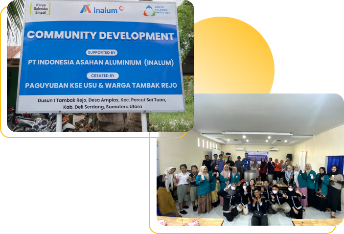

<body background="image/main2.jpg">
    <font face="poppins" color="215070">
        <table border="0" width="100%" height="100%" cellpadding="20">
            <tr>
                <td valign="top" width="70%">
                    <h1 align="left">&#10077; Community Development <br>Paguyuban KSE USU &#10078;</h1>
                    <p align="justify">Community Development atau yang biasa disingkat COMDEV merupakan sebuah program kerja dari 
                    Paguyuban KSE USU dalam bentuk kegiatan pengembangan masyarakat. Program kerja ini merupakan program kerja yang 
                    seluruh pendanaan dan penugasan langsung dari Yayasan Karya Salemba Empat (KSE)</p>
                    <h4>Lokasi Pengembangan:</h4>
                    <p>&#128205; Desa Amplas, Kec. Percut Sei Tuan, Kabupaten Deli Serdang, Sumatera Utara</p>
                </td>
                <td align="right">
                    
                </td>
            </tr>
        </table>
        
    </font>
</body>